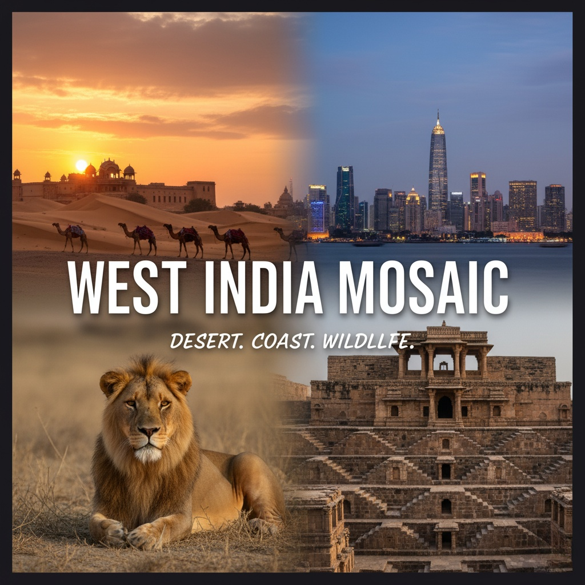
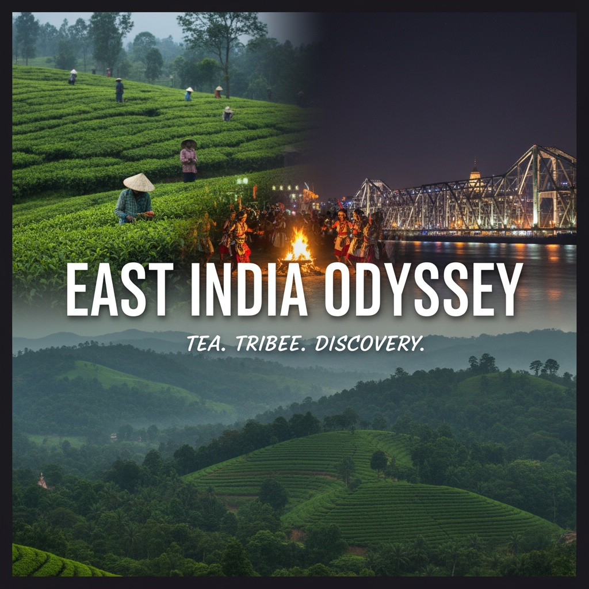

10 days exploring iconic landmarks, royal palaces, and spiritual cities across Delhi, Agra, Jaipur, and
Varanasi.
Learn More :
• Your 10-day North India Explorer journey begins in Delhi, where you’ll arrive and explore iconic sites like
the
Red Fort, Humayun’s Tomb, and Chandni Chowk.
• From Delhi, travel to Agra by fast express train (Shatabdi or Gatimaan Express) costing approximately
₹1,000–₹1,500,
offering a quick and comfortable ride.
• In Agra, visit the world-famous Taj Mahal, Agra Fort, and Mehtab Bagh before continuing to Jaipur by train
or private
vehicle (₹600–₹1,200), soaking in the royal heritage of forts and palaces.
• After Jaipur, board an overnight sleeper or AC train to Varanasi, India’s spiritual capital, with fares
ranging from
₹1,200–₹2,000 depending on class.
• In Varanasi, enjoy a serene boat ride on the Ganges at sunrise and witness the mesmerizing Ganga Aarti
ceremony.
• The journey includes mostly train travel for efficiency and local experience, while local sightseeing uses
auto-rickshaws and taxis (₹1,500–₹2,500 total).
• A short river cruise in Varanasi adds a special touch for about ₹500.
• Total transportation and travel expenses for the trip are approximately ₹5,000–₹8,000, depending on class,
mode, and preferences.
South India Retreat
10 days discovering lush backwaters, ancient temples, and vibrant culture in Kerala, Tamil Nadu, and Karnataka.
Learn More :
• Your 10-day South India Retreat begins in Chennai, Tamil Nadu, where you'll explore historic temples like
Kapaleeshwarar and the colonial charm of Fort St. George.
• Travel south by train or private cab (₹600–₹1,200) to Mahabalipuram and Pondicherry, famous for their
ancient
stone carvings and French-influenced streets.
• Next, head to Madurai by train (₹500–₹900), home to the iconic Meenakshi Temple and vibrant local
markets.
• From there, travel to Kerala via train or bus (₹800–₹1,200), arriving in Alleppey to enjoy a peaceful
overnight
houseboat cruise through the lush backwaters (approx. ₹2,000–₹3,000 per person).
• Then move to Kochi, a coastal city blending colonial history and art, using local transport (₹300–₹500).
• The final leg takes you to Karnataka’s Mysore or Bangalore by train (₹800–₹1,500), where you’ll explore
palaces,
gardens, and bustling city life.
• Travel is mostly by train and houseboat, with local cabs or autos for city sightseeing (₹1,500–₹2,500).
• Total transportation and travel costs range between ₹6,000–₹9,000, depending on comfort level and chosen
modes.

West India Mosaic
10 days discovering the desert landscapes, heritage cities, and coastal gems of Gujarat, Rajasthan, and Goa.
Learn More :
• Your 10-day West India Mosaic begins in Ahmedabad, Gujarat, where you’ll explore Sabarmati Ashram,
stepwells, and Indo-Islamic architecture.
• Travel to the Rann of Kutch by train or cab (₹700–₹1,200), where you’ll witness surreal white salt deserts
and vibrant tribal culture—especially during the Rann Utsav.
• Next, head to Udaipur, Rajasthan via train (₹800–₹1,400), the City of Lakes known for its palaces and serene
boat rides.
• From there, travel to Jodhpur or Jaisalmer (₹600–₹1,200), discovering majestic forts and golden desert
landscapes—opt for a camel safari or overnight desert camp (₹1,500–₹2,500).
• Continue the journey to Goa by train or flight (train: ₹1,200–₹2,000, flight: ₹3,500–₹5,000), where
Portuguese-influenced churches, beaches, and spice plantations await.
• Local travel is done via autos, cabs, and occasional ferries in Goa (₹1,500–₹2,500 total).
• Most long-distance travel is by train, with an optional short flight to save time.
• Total transportation and travel costs range from ₹7,000–₹11,000 depending on comfort, speed, and choices
like desert camping or flying to Goa.

East India Odyssey
10 days exploring the spiritual and cultural richness of Kolkata, Odisha, and the Eastern Himalayas.
Learn More :
• Your 10-day East India Odyssey begins in Kolkata, the cultural capital of India, where you’ll explore
colonial landmarks, vibrant markets, and spiritual sites like Dakshineswar Temple and Victoria Memorial.
• From Kolkata, travel to Puri, Odisha by overnight train or flight (train: ₹500–₹1,200, flight:
₹2,500–₹4,000), where you’ll visit the sacred Jagannath Temple and relax on the golden beaches.
• Take a day trip to Konark to witness the UNESCO-listed Sun Temple, using a local cab or bus (₹300–₹700).
• Continue to Bhubaneswar, the temple city, by train or road (₹200–₹500), known for ancient architecture and
tribal museums.
• Next, head north to the Eastern Himalayas—either Darjeeling or Kalimpong, via train to New Jalpaiguri
(₹600–₹1,200) followed by a shared jeep or cab ride into the hills (₹300–₹600).
• Enjoy tea gardens, Buddhist monasteries, and panoramic views of Kanchenjunga. Most intercity travel is by
train and road, offering a mix of comfort and local flavor.
• Local sightseeing involves cabs and shared autos (₹1,500–₹2,500 total). Overall, transportation and travel
costs for the journey range between ₹6,000–₹9,500 depending on your travel style and transport choices.